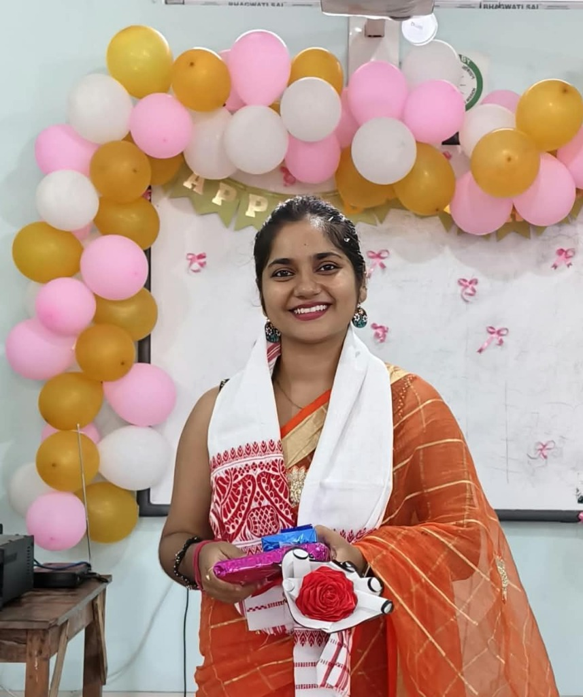

Miss Shainee Saha
Assistant Professor, Department of Statistics
Theory finds its true purpose when tested against reality. Your lessons empower us to model real-world data, find patterns in the noise, and transform raw evidence into practical conclusions. You give us the tools to face uncertainty with clear, objective decision-making.